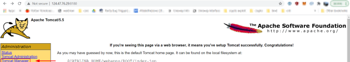
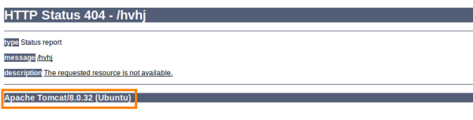

Apache Tomcat
Apache Tomcat is a widely used, Free and Open Source Software (FOSS), web server used primarily for Java-based web applications
Tomcat provides a "pure Java" HTTP web server environment in which Java code can run
| port | service |
|---|
| 8080 | Apache Tomcat |
| 8443 | ApacheTomcat SSL |
Issues
1. use of default or weak credentials for administrative interfaces
Old versions of Apache were shipped with
default credentials and often, System Administrators will leave them be for ease-of-use, forget about changing the defaults
1) These web applications contain an administrative interface known as the “Tomcat Manager”.
2) To try the default credentials go to <targetIP>:8180
 3) Password guessing
▪ Metasploit
msf> use auxiliary/scanner/http/tomcat_mgr_login
msf> show options
msf> set rhost 124.47.76.29
msf> set rport 8180
msf> set STOP_ON_SUCCESS true
msf> exploit
Instead of the default page, we can try to access a non-existent resource on a random page, the error page maybe will reveal us the version of Tomcat
Vulnerability:
Admin Panel
The Tomcat's default directory for the admin panel is
/manager/html and most common username:password is
tomcat:s3cret